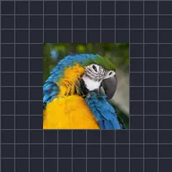

Schommelen

Draait de laag heen en weer tussen twee hoeken.
Schommelen draait een laag heen en weer tussen Hoek 1 en Hoek 2, Frequentie keer per seconde. Met Golf kies je Sinus (vloeiend) of Driehoek (gelijkmatige snelheid), en met Fase verschuif je lagen ten opzichte van elkaar.
Instellingen
| Instelling | Type | Bereik | Standaard |
|---|---|---|---|
| Frequentie | Getal | 0.1 Hz tot 16 Hz | 2 Hz |
| Hoek 1 | Hoek | -3600° tot 3600° | -30° |
| Hoek 2 | Hoek | -3600° tot 3600° | 30° |
| Fase | Getal | 0 tot 2 | 0 |
| Golf | Keuze | Sinus, Driehoek | Sinus |
| Stijl | Keuze | Klassiek, Standaard | Klassiek |